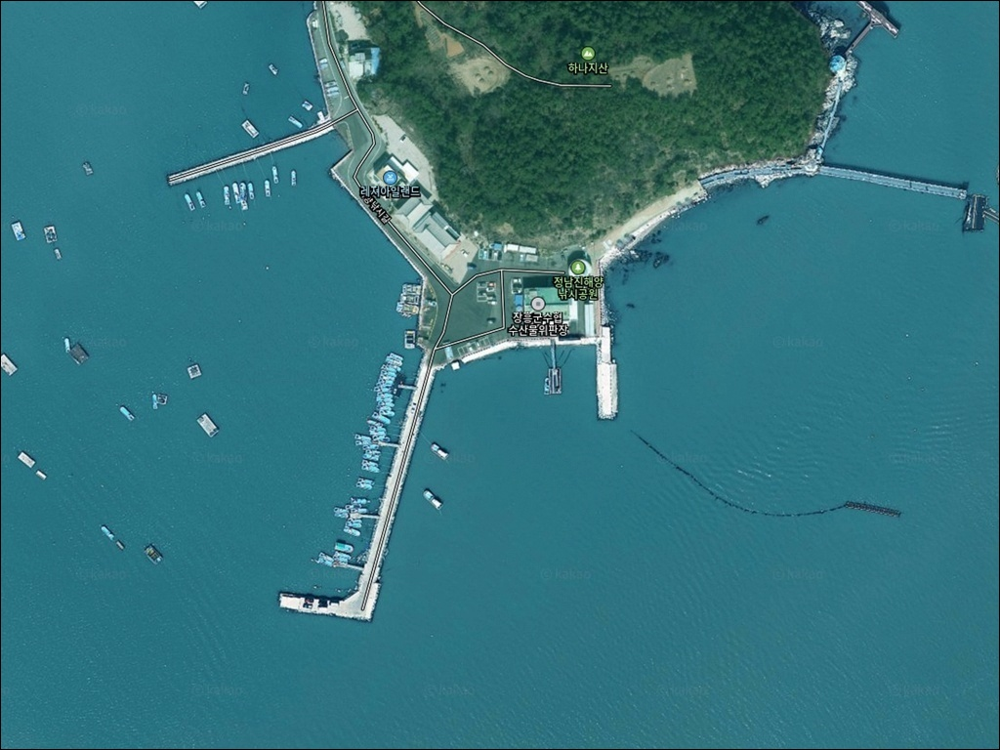
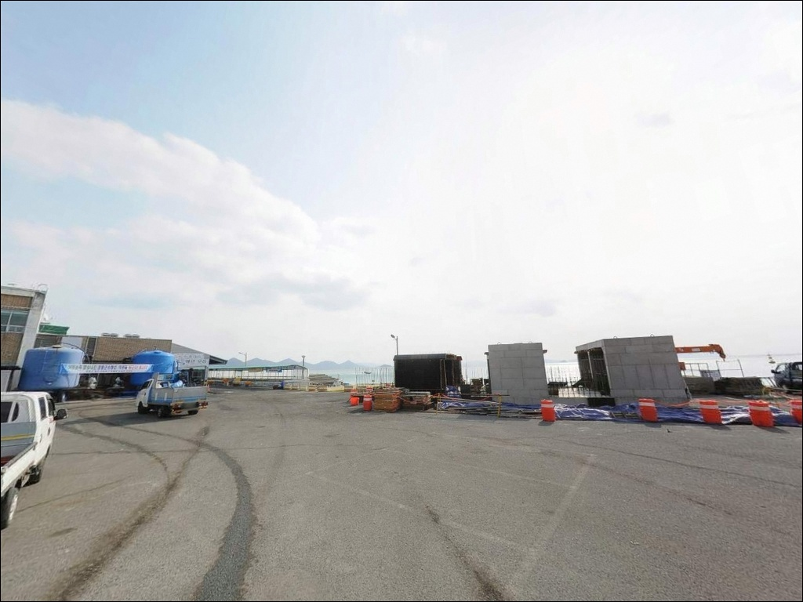
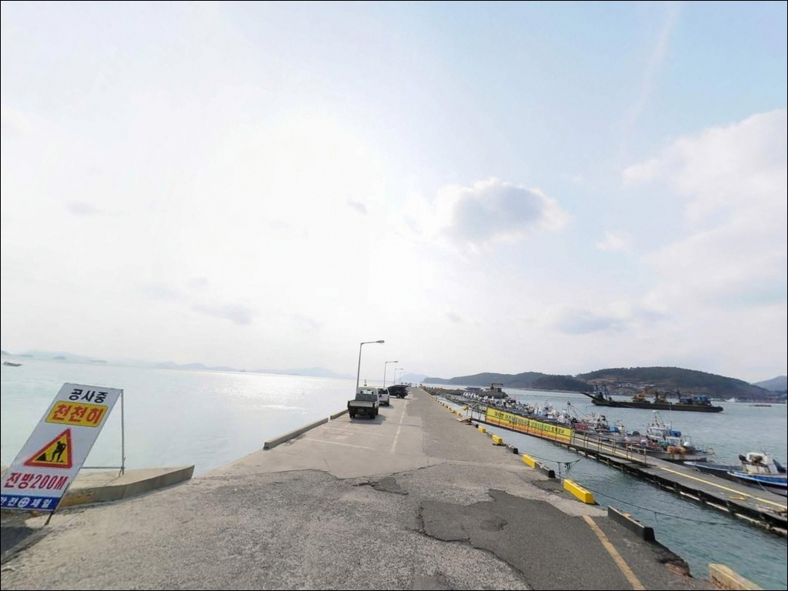
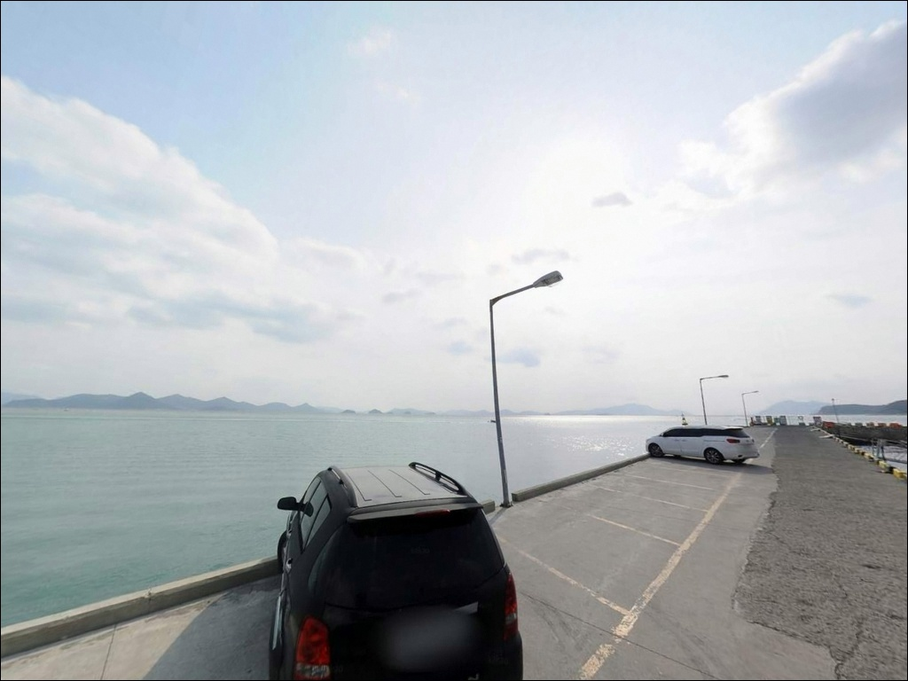
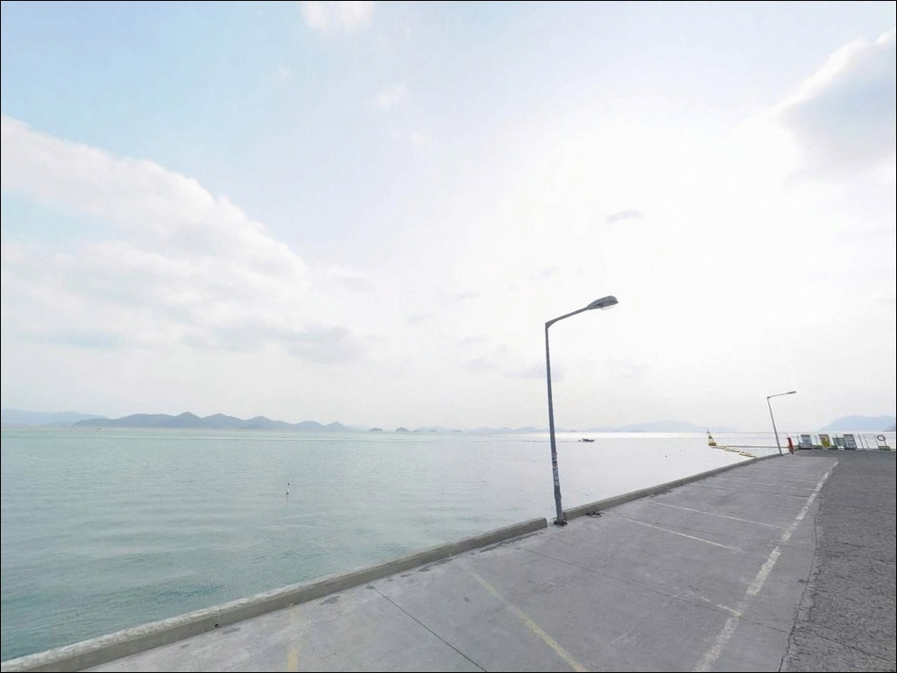
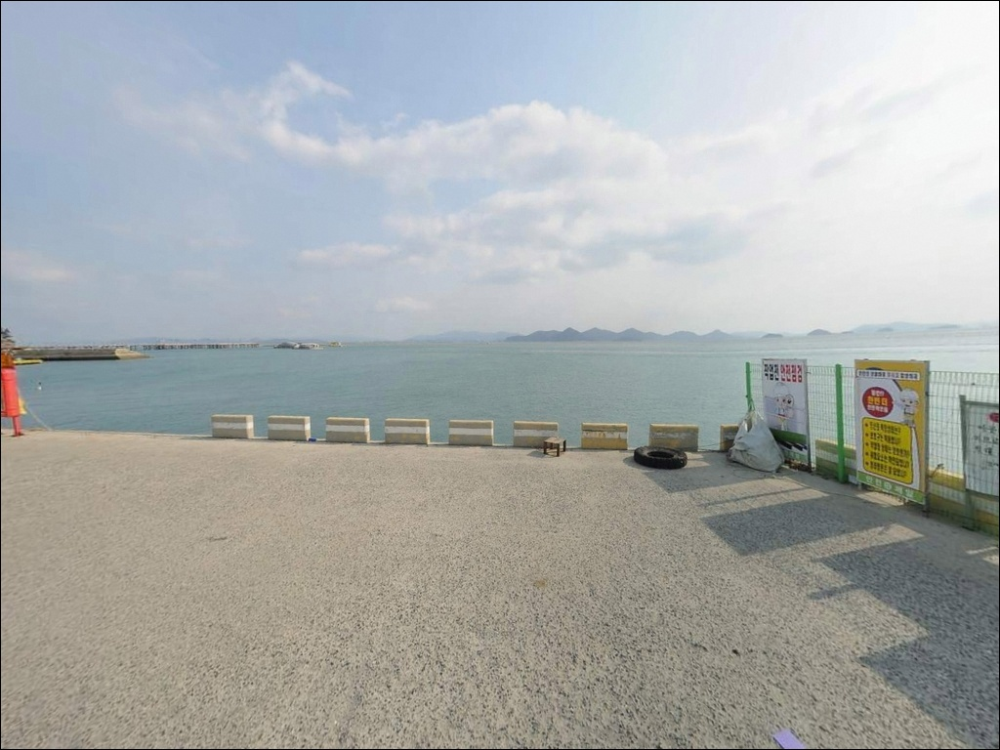
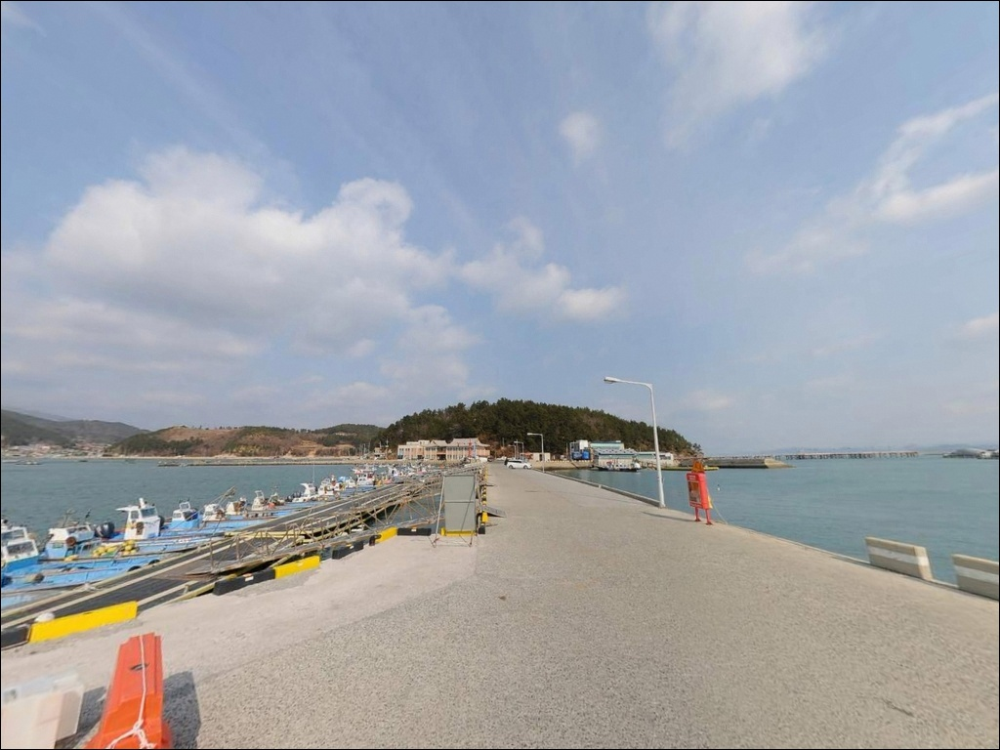
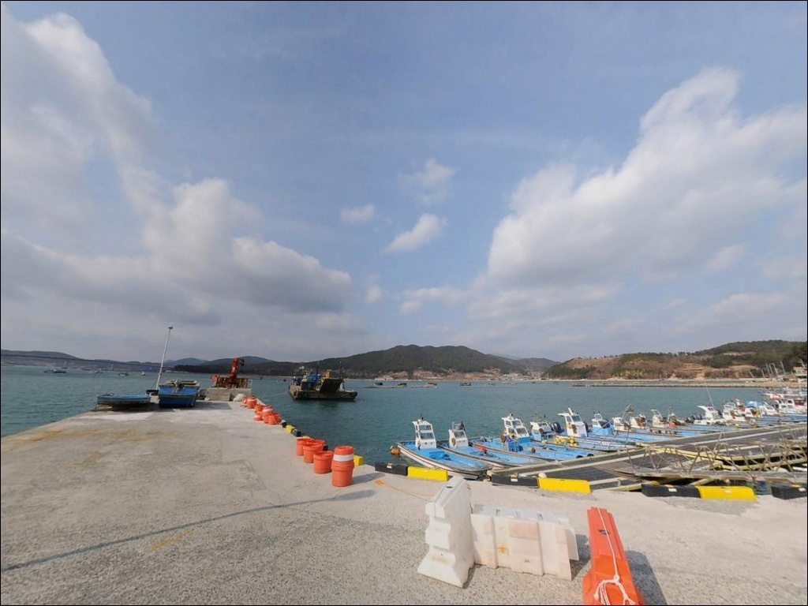
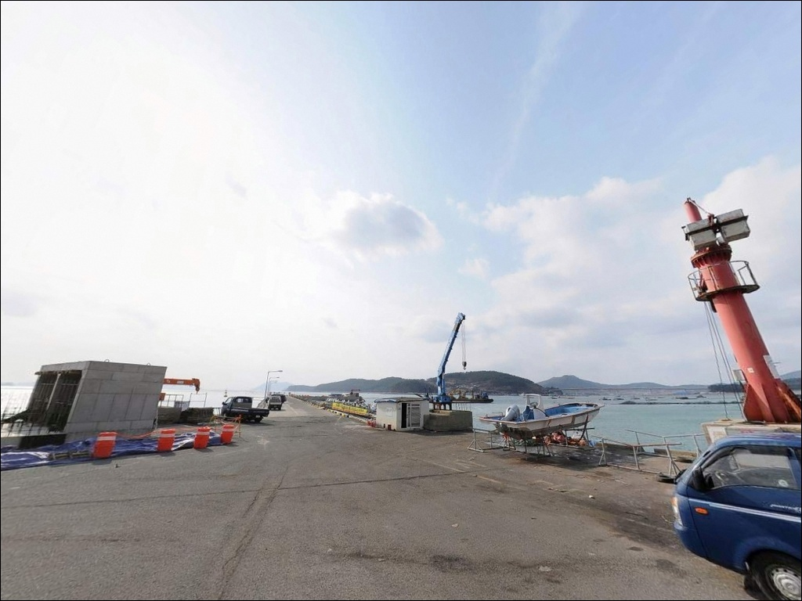

정남진해양낚시공원, 전남 장흥군 해수욕장 개장 전 한적한 바다 차박 낚시 스팟
이 페이지에는 광고(제휴 링크 포함)가 있으며, 광고 링크를 통해 구매하면 운영자가 판매 수익 또는 수수료를 받을 수 있습니다. 포인트 사진: 카카오맵 스카이뷰·로드뷰. 이 페이지의 지도·사진 이미지는 카카오맵의 실제 서비스 이미지와 다를 수 있습니다.


포인트 안내
정남진해양낚시공원
전남 장흥군 회진면 대리 115-12
운영 요일과 입장 시간을 확인하지 않고
이 포인트를 찾는 것이 가장 흔한 실수입니다.
월·화 휴장에 일몰 이후 입장이 막히는 유료 시설이라,
타이밍을 잘못 잡으면 현장에 도착해도
낚시 한 번 못 하고 돌아서는 상황이
실제로 벌어집니다.
전남 장흥군 회진면 대리,
득량만 입구에 자리한 정남진해양낚시공원은
2008년 개장한 전국 최초·최대 규모의
해양낚시 전용 공원입니다.
낚시교, 부잔교식 낚시터, 육상 낚시터,
콘도식 낚시터까지 갖춘 관리형 시설로,
감성돔 찌낚시 포인트로 공식 관광 자료에
반복적으로 소개된 검증된 낚시 공원입니다.
이 글은 정남진해양낚시공원의
운영 여건, 진입 환경, 낚시 구조,
차박 가능성과 대체 포인트에 집중합니다.
조황 단정이나 특정 어종 보장은
이 글의 범위에 포함되지 않습니다.

1. 진입 동선과 포인트 접근성
정남진해양낚시공원은 회진면 대리 해안도로에서
해양낚시길로 바로 연결되는 구조입니다.
전용 진입로가 포장되어 있어
경사나 비포장 구간 없이
공원 입구까지 평탄하게 진입할 수 있습니다.
대형 SUV나 캠핑카, 카라반 차량도
무리 없이 진입 가능한 도로 폭이
확보되어 있습니다.
공원 입구에 넓은 회차 공간이 조성되어 있어
대형 차량도 방향 전환에 어려움이 없습니다.
서울·수도권 방면에서는 서해안고속도로 → 목포 →
장흥 방향이 일반적인 접근 동선이며,
부산 방면에서는 남해고속도로 → 순천 → 보성 →
장흥 → 관산 → 회진 순으로 진입합니다.
공원 주차장은 100대 이상 수용 가능한
정식 주차 공간이 조성되어 있습니다.
바다를 정면으로 바라보는 방향으로
주차 구역이 배치되어 있어,
차 안에서도 해양 조망이 가능한 구조입니다.
주차 후 공원 시설까지 이동 동선이
짧고 평탄한 것도 이 포인트의 장점입니다.

2. 차박 환경과 야간 체류 여건
공원 주차장은 100대 이상 수용 규모로
차량 공간 확보에 무리가 없습니다.
바다를 바라보는 방향 주차가 가능한 구조라
차 안에서 해양 조망을 즐기며 머무는 형태의
야간 체류 시도가 가능한 구조입니다.
다만 관리형 유료 시설 특성상
차박 장박에 대한 현장 규정을
방문 전 공원 측에 확인하는 것이 안전합니다.
공원 시설 운영 시간은 일출 이후~일몰 이전으로
제한됩니다.
일몰 후에는 공원 내 낚시 시설 이용이
불가한 구조이므로,
야간 낚시를 원한다면
회진면 연안 포인트나 회진항 방파제를
별도로 탐색해야 합니다.
공원 외부에서의 야간 낚시 동선은
출발 전에 미리 파악해 두는 편이 좋습니다.
콘도식 낚시터를 이용하면
공원 내에서 하룻밤 숙박이 가능합니다.
4인 기준 평일 10만 원 수준으로 운영되며,
화장실·샤워실·주방이 구비된 시설입니다.
악천후나 겨울철에도 낚시를 이어갈 수 있어
낚시와 숙박을 동시에 해결하려는
낚시인에게 현실적인 선택지가 됩니다.


3. 주변 편의시설 및 인프라 현황
공원 내에는 공공 화장실, 매점, 수변 데크,
2층 규모의 안내소가 운영됩니다.
화장실은 관리 상태가 양호하고
주차장과 인접해 있어
이용 동선이 짧습니다.
장비 대여 서비스도 현장에서 운영되어
채비를 갖추지 않아도 낚시 체험이 가능한
구조입니다.
반경 3km 이내, 회진면 소재지 방면으로
편의점, 낚시점, 식당, 농협 하나로마트가
밀집되어 있어 보급 접근성이 좋습니다.
공원과 인접한 거리에
정남진해양낚시공원 회센터도 운영되어
조업 후 현장 식사 동선을 이어가기 편합니다.
응급 상황 발생 시 대덕읍 소재지에
약국과 의원이 위치합니다.
전기차 충전 시설도 공원 인근에
설치되어 있어
전기차 이용 낚시인도 충전 걱정 없이
방문할 수 있는 환경입니다.

4. 유료 낚시터 방문 전 반드시 확인해야 할 사항
정남진해양낚시공원은 수~일요일 운영,
월·화요일 휴장 시설입니다.
운영 시간은 일출 이후~일몰 이전으로
기상특보 발효 시에는 입장이 제한됩니다.
방문 당일 기상 예보 확인과 함께
공원 운영 여부를 사전에 전화로 확인하는 것이
헛걸음을 막는 가장 기본적인 준비입니다.
공원 안내소 전화번호는 061-867-0555입니다.
입장료는 성인 1회 이용 기준 2만 원이며,
청소년은 1만 원입니다.
공원 내 낚시는 원투낚시 외
방법 사용이 제한되어 있습니다.
루어낚시·에깅은 공원 외부 포인트에서
별도로 운용해야 하므로,
낚시 스타일에 따라 방문 목적과
동선을 미리 구분해 두는 것이 좋습니다.
부잔교 특성상 너울성 파도에 의한
흔들림이 있을 수 있습니다.
모든 낚시 구간에서 구명조끼 착용이 의무이며,
공원 내 취사는 일체 금지됩니다.
어린 고기와 산란 중인 어류는
방류하는 것이 공원 이용 기본 원칙입니다.

5. 지형 기반 낚시 여건 분석
정남진해양낚시공원은 득량만 입구에 위치해
소록도와 금당팔경 방향의 개방된 해역을
직접 마주하는 구조입니다.
낚시교와 부잔교가 바다 위로 길게 뻗어 있어
데크 위에서 수심 깊은 자리에
바로 접근할 수 있습니다.
부잔교 끝단 기준 수심 8~12m권으로,
조류 소통이 원활한 득량만 입구 해역에서
감성돔 찌낚시 여건이 가장 두드러지는 포인트입니다.
바닥 지형은 사니질과 여밭이 섞인 구조로
특정 어종이 고착하기 좋은 환경입니다.
부잔교 기둥 사이와 교각 주변은
그늘과 먹이 환경이 형성되는 자리로,
찌낚시 포인트 낚시에서 기대감이 있는 구간입니다.
물때에 따라 조류 소통이 달라지므로
바다타임에서 회진 해역 물때를
출발 전에 확인하는 것이 기본입니다.
공원 연안 종묘 방류 이력이 있어
인근 해역의 어족 자원이 유지되는 구조이며,
득량만 특성상 계절별 어종 변화가 뚜렷한 해역입니다.
최신 조황은 출조 전 공원 공식 홈페이지(www.jhfishingpark.kr) 또는
"득량만 조황"으로 검색해 반드시 확인하시기 바랍니다.


6. 정남진해양낚시공원에서 조과 차이가 나는 낚시 스타일
이 포인트에서 가장 잘 맞는 낚시는
감성돔 찌낚시입니다.
부잔교와 낚시교 구조가 안전난간을 갖추고 있어
찌낚시 운용이 안정적입니다.
조류가 살아 있는 물때에는
부잔교 외해 측을 흘리는 방식이
감성돔을 노리기에 유리한 라인입니다.
가을철에 씨알이 올라오는 경향이 있어
가을 시즌이 집중 방문 시기입니다.
원투낚시도 이 공원 구조에 잘 맞습니다.
외해 방향으로 수심이 확보된 구간에서
중거리 캐스팅으로 바닥층을 공략하는
방식이 가능합니다.
공원 내 허용된 공식 낚시 방법이기도 해서
규정 위반 없이 운용할 수 있는
현실적인 선택입니다.
갑오징어와 주꾸미를 노리는 루어낚시는
공원 외부 연안 포인트에서 시도해야 합니다.
공원 규정상 루어 방식은 제한되어 있어,
에깅이나 루어낚시를 주력으로 삼는 낚시인이라면
회진항 방파제나 대리항 연안을
함께 동선에 넣는 방식이 효율적입니다.
득량만 해역은 갑오징어 시즌에
외부 포인트에서도 충분한 기대감이 있는 해역입니다.

7. 대안 포인트와 플랜 B 동선
공원 입장 시간이 지났거나
무료 포인트를 원한다면
회진항 방파제가 첫 번째 대안입니다.
공원에서 가장 가까운 실제 방파제로,
내항 발판이 편리하고 가로등 조명이
야간 낚시에도 적합한 환경입니다.
루어낚시·에깅을 공원 외에서 이어가려는
낚시인에게 현실적인 선택지가 됩니다.
득량만 동일 해역을 공유하는
노력도 방파제도 고려할 수 있습니다.
테트라포드와 수중 여밭 구간이 있어
외항 노출이 강한 편이며,
루어낚시 중심의 공략에 어울리는
지형 구조입니다.
진입로 상태와 발판 여건은
사전에 확인하는 편이 안전합니다.
남쪽으로 약 15km 거리에
마량항(강진군 마량면)이 위치합니다.
항구 시설이 잘 갖춰진 곳으로
방파제 낚시와 차량 대기 기반 체류 모두
가능한 포인트입니다.
정남진해양낚시공원과 같은 날 묶어서
돌아보기에 적합한 이동 거리입니다.

운영 규정만 파악하면
정남진해양낚시공원은
믿을 수 있는 낚시 베이스캠프입니다
감성돔 찌낚시나 원투낚시를 안전하게 즐기고 싶은
낚시인이라면 이 공원의 구조는
잘 맞는 조건입니다.
테트라포드나 갯바위 없이
데크 위에서 수심 좋은 자리에
바로 접근할 수 있는 환경이
다른 방파제 포인트와 다른
이 공원만의 강점입니다.
진입로 상태가 좋고 주차 공간이 넉넉해
가족 단위 방문이나 대형 차량 낚시인에게도
부담 없이 접근할 수 있는 포인트입니다.
반면 루어낚시·에깅을 주력으로 삼거나
야간 낚시를 전제로 찾아가는 낚시인이라면
공원 내 규정이 기대와 맞지 않을 수 있습니다.
이 경우 회진항 방파제를 함께 동선에 넣고
방문 목적에 따라 장소를 나누는 방식이
더 현실적인 출조 설계입니다.
진입로 상태가 좋고 편의시설이 갖춰진 이 포인트에서
낚시를 마치고 콘도식 낚시터에서 하룻밤 머문다면,
다음 날 아침 일출부터 득량만의
물때를 다시 노릴 수 있는
출조가 됩니다.
진입로 상태가 좋고 편의시설이 갖춰진 포인트라도,
운영 규정을 사전에 파악한 낚시인에게만
그 가치가 온전히 돌아옵니다.